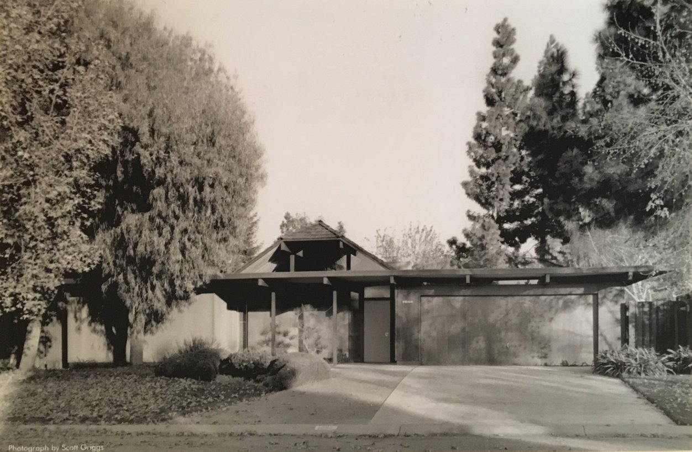

Eichler Homes in a Postwar Society
To be engaged with architecture is to be engaged with almost everything else as well: culture, society, politics, business, history, family, religion, education." - Paul Goldberger, Why Architecture Matters

Figure 1.0: An Eichler home today.
Despite it starting as a high-end home for upper class families, Eichler homes became one of the most adopted house designs in the Bay Area, and became widely successful in the industry due to its accessibility to anyone, purposeful design, and Joseph Eichler's influence in the house building industry.
Roots
“I sometimes feel that if more fortunate men like me thought as I do, there would be fewer unfortunate people in this world.” – Eichler Homes
Entrance to Market Pricing
Eichler homes were never the “mass-produced” housing for the population. When they first entered the market, they were had a starting price of around $18,000-$25,1 when at the time the average home price was around $7,000-$8,000.2 The high cost of the home was due to the expensive cost of the materials, and building the home. In one recorded conversation, Eichler exclaimed to one of his architects: “I sell these homes for under $10,000 and you can’t design a house for me that I can build for less than $100,000.”3
Reducing Cost
Eichler, however, was motivated to provide mass, affordable housing for the new, optimistic postwar population. He was not interested in providing only high end homes, but rather to build communities for the families of America. He initially worked extremely close with Bob Ashen, one of his initial lead architects, to go over the design to begin to reduce cost.4 It took over a hundred major redesigns for the building cost to be brought down enough to be mass produced.5 It took 5 years, of which the Eichler architects worked tirelessly to continue to redesign the home to reach the market.6Yet, they made this up due to their “assembly line efficiency” in building the homes.7
Figure 1.1: An advertisment for an Eichler home during its entrance to market.

Figure 1.2: An award given to Eichler homes for their family driven design.
Figure 2.1: A promotional photograph of Eichler homes to show the role of women in the kitchen, taken by Ernest Braun

Figure 2.2: Another advertisment for Eichler homes, showing the reduced prices and accessibility to anyone.
Society
"California design is not a superimposed style, but an answer to present conditions." - Greta Magnusson Grossman
Racial Covenants
Eichler homes were pushing the envelope against social constructs by being progressive about their own subdivisions. Minorities, such as African and Asian Americans, accounted for 4% of Eichler sales.8 Although a small percentage for today, it was a social revolution at the time. Eichler homes were one of the few firms that sold to anyone who could afford: a concept called “open occupancy.”9 Because Eichler homes were taking the step toward a more diverse community, some of the owners from predominantly white community often frowned upon minority neighbors.10 There was a case where warning signs were made to inform prospective customers that “Eichler homes sells to negroes.”11 Yet, Joseph Eichler strongly believed and continued to practice open occupancy throughout his operations.12 It was a way to retaliate against the norm that suburbia would be an escape from mixed classes and race.13 Even with the more diverse communities, there were extremely high levels of community engagement, manifested with the many events and get-togethers.14
Morale
The overall morale of the country postwar was optimistic; in California, however, neighborhoods were glowing. The new, young families finally had a chance to settle down and find their happiness and peace, for which they had fought for.15 This was also manifested in the economy: immediately after WWII, the Californian economy became one of the world’s largest.16 This allowed for vast and broad neighborhoods throughout California, and specifically populated within the Bay Area.17
Design
'[Eichlers] have a common flavor, but aren't cookie-cutter.' - Peter Schlosser, Architect
Modernist Design & Roots
Modernist houses often contain large glass windows and atriums, filled with open space and natural light. The idea is carry a sense of the outdoors to the inside of the home, such that nature and the home interior are exchangeable. Yet, modernism has always been more than design - it entails social responsibility with the era, evolving with the times.18 During the Eichler period, it represented the postwar optimism and a better way of life for new families in suburban California.19 The designs were purposed for a lifestyle that captured an open society with less segregation,20 with floor plans that created a flow from room to room.21 It grew major popularity through promotion efforts postwar.22 It grew in popularity rapidly due to its purpose being simple and efficient production.23
Family Design
Joseph Eichler also pushed for family – he was one of the few architect designers who considered the role of women in the house - the open kitchen engaged the mother with activities and events taking place, while having control of her work.24 Postwar, women struggled to find their equality in society – Eichler’s architecture design helped combat this.25 This was also manifested in where the dining table was built. It had the versatility of being able to be put into the dining room or multipurpose room, engaging women as a hostess as well as a mother.26 The children’s room is always placed near the atrium for independence while growing up, and adjacent to garden to where children can play privately and safely.27 To many, living in a California suburbia was meant to protect children, and their families, from the outside.28
Figure 3.1: A promotion photograph to capture the open atrium of Eichler homes, with large glass windows.
Figure 3.2: The outside of an Eichler home.

Figure 4.1: An interview with Joseph Eichler in The American Builder, 1957.

Figure 4.2: A promotional letter from Joseph Eichler describing his inspiration for his design.
Joseph Eichler
Joseph Eichler was concerned about the way people live. Contrary to predictions, he made a success of building houses that faced the future. – A. Quincy Jones: The Oneness of Architecture
Influence & Values
Joseph Eichler defined standard practice for his firm, in the decisions he made and the values of the company.29 In this, he failed to recognize racial covenants, and ensured his subdivisions were free of racism.30 He took this to the length, where he even threatened prospective buyers when they complained about minorities having the privilege to purchase homes.31 In addition, he also believed in second chances. He hired ex-convicts to help build his homes, as a way for them to begin again.32 For this reason, all the communities that he built were socially responsive, and holistic.33 Throughout his career, he eventually grew into a team of architects that considered of Eichler Design: Anshen, Steven Allen, A. Quincy Jones, Frederick Emmons, and Claude Oakland, which helped design and build over 11,000 homes throughout their existence.34
Notes
Reflection
I first chose to research Eichler homes because of my undeveloped interest in architecture. Having always been intrigued with home design, I thought that studying Eichler homes would be the perfect entrance into the world of architecture. I don't really think I was ready for what I would learn.
While researching, my interest in the subject grew exponentially - I found myself continuing to read about Eichler homes, and becoming captivated in a world which I had never experienced. After learning more about Eichler homes, I wish more was done to showcase this art that is still found to be used today.
Special Thanks
Thank you to Ms. Rees and Ms. Cranston for helping me through researching this project.
Bibliography
For reference, the bibliography as well as a more formal outline can be found at tiny.cc/eichlerdocs.
Source Code
Check out the code and documentation at tiny.cc/eichlercode, and more of what I do at github.com/n3a9.